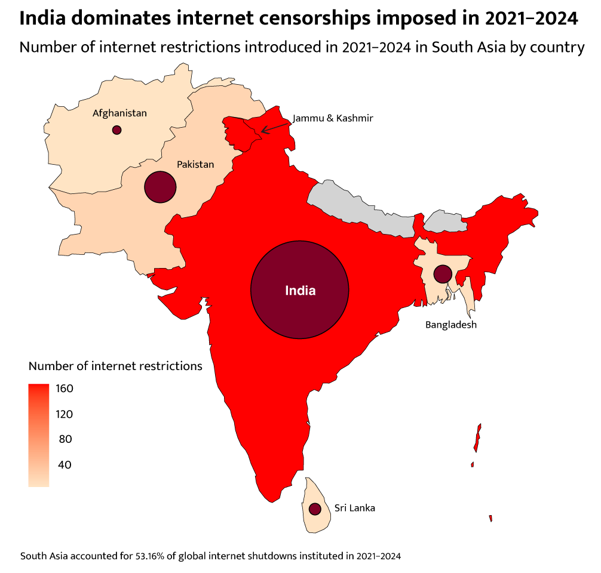
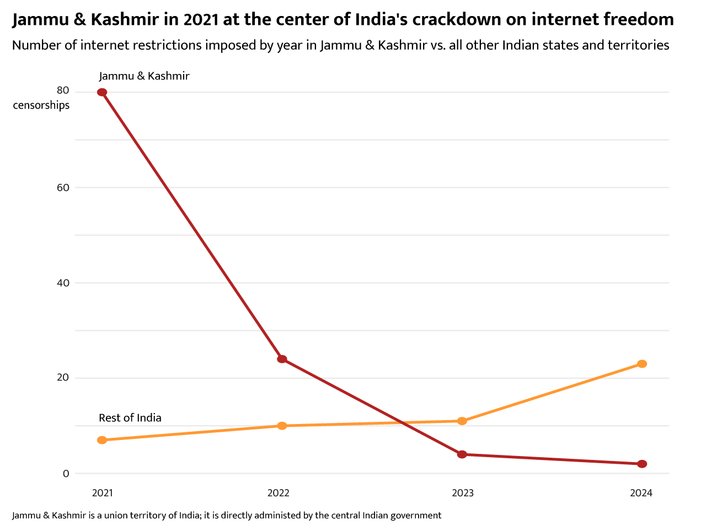
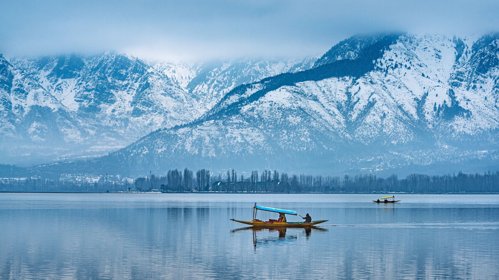
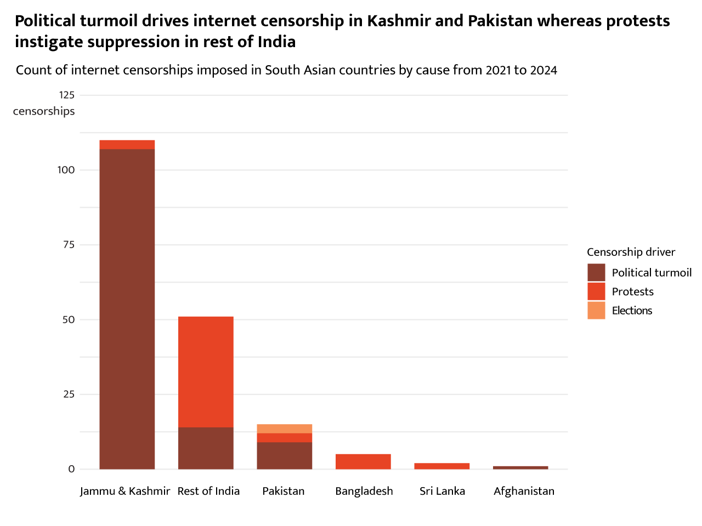
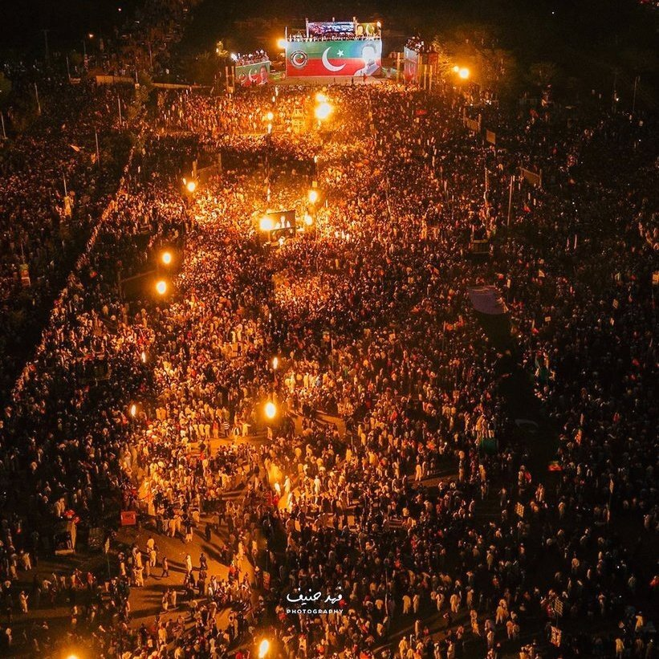

by: Huda Saeed
2024 witnessed a surge in government-imposed internet and communication platform shutdowns worldwide. South Asia, accounting for about 3% of Earth’s land mass and 25% of the global population, achieves distinction in this domain: From 2021 to 2024, this region instituted more than half of all internet shutdowns. India, in particular, stands out with a staggering 161 internet restrictions, overshadowing its neighbors’ infringements on internet freedom. And when India and freedom are in the same sentence, Kashmir must be soon to follow: Sure enough, upon further inspection, about half of India’s censorships were inflicted on Jammu and Kashmir.

In August 2019, India shut down all communication networks in Jammu and Kashmir, and mobile internet was not restored until 2021. This tactic sought to preemptively squash protests due to the Indian government’s revocation of Articles 370 and 35A of the Indian constitution, which provided Kashmir with a semi-autonomous status whereby the region had its own constitution and legislature, the latter of which could define permanent residents. Now this power is in India’s hands, and Kashmiris’ fear of India’s importation of settlers to shift the demographic makeup of the scenic Muslim-majority region became closer to realization than ever before.

As India loosened its censorship on Kashmiris a few years after the change of the region’s status, it turned its attention to the rest of the state: A 200-day internet shutdown was imposed in the state of Manipur in 2023 due to ethnic conflict, while the state of Haryana experienced the highest number of internet shutdowns in the country in 2024 due to the farmers’ protest, which sought greater state support for farmers’ livelihood.

Looming behind India’s iron fist on internet freedom is Pakistan’s increasingly clenched grip: In 2022, the Pakistani government shut down the internet to ban rallies organized by the recently ousted prime minister Imran Khan and disrupted YouTube during live broadcasts of his speeches. The next year, Khan was arrested for selling state gifts for which he was found guilty; this sentence is currently suspended. The internet, Twitter, YouTube, and Facebook were limited during his arrest to hinder the organization of protests and restrict knowledge from the public. More internet censorships were leveled against Khan the following year during his rallies, the launch of his party’s election fundraising telethon, and his party’s virtual gatherings. After months of digital suppression targeted at Khan, a highly suspected fraudulent national election was held under an internet blackout, and further suppression ensued on Twitter due to protests.

In an increasingly authoritarian world, anyone could be the next victim of an internet shutdown. This is a sinister tool of repression by the state to mask its corruption and limit the dissemination of critical knowledge to the masses, casting them into darkness. With most of my family in Pakistan and my Kashmiri roots, these egregious violations hit close to home. In addition to the larger-scale oppression this tactic facilitates, internet shutdowns greatly hurt everyday lives; education, work, healthcare, banking, communication, and other vital aspects of life are dependent on internet connectivity. When the internet goes out, paychecks, meals, medical care, social connection, and more follow.
“When the internet is shut down, I have no work, do not get paid, cannot withdraw any money from my account, and cannot even get food rations.” - a 35-year-old Indian mother of 5
“It [the communication shutdown] felt like the silence of the graveyard.” - a 28-year-old Kashmiri
Data visualizations were created on R and Adobe Illustrator from a Surfshark dataset you can access here, which is accompanied with the context for many internet suppressions included in this narrative.